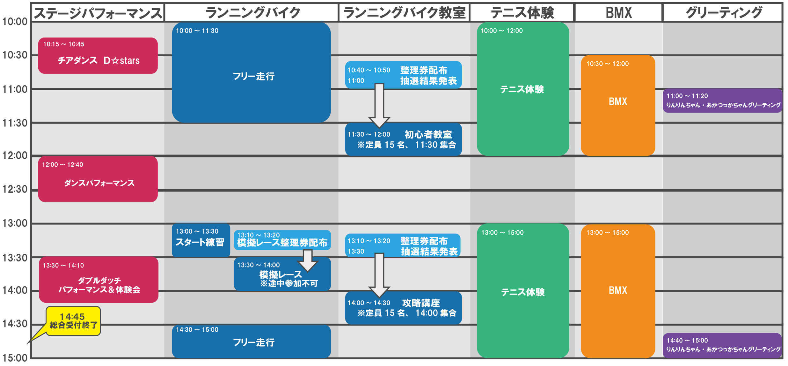
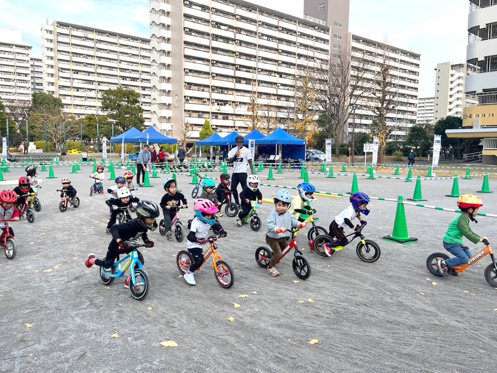
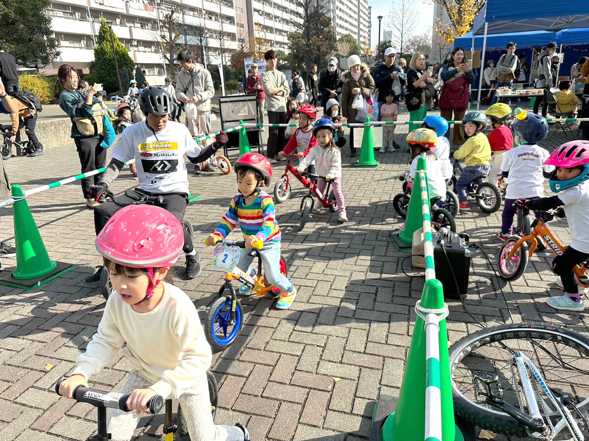
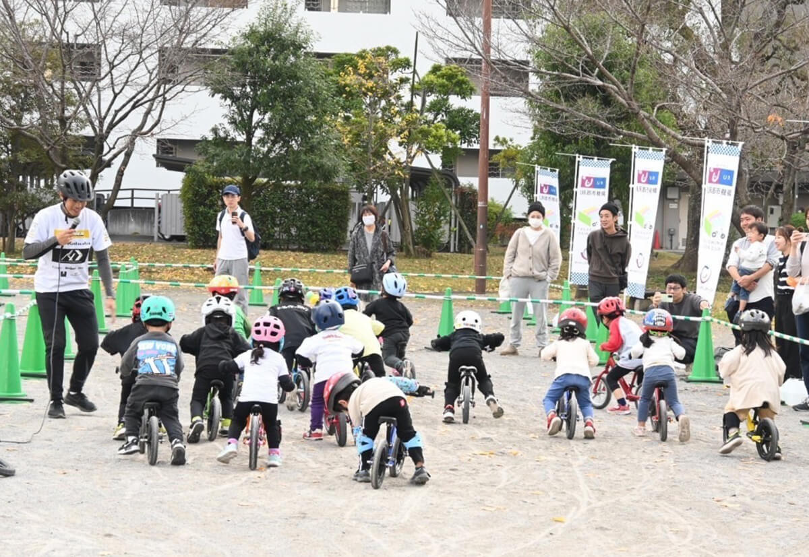
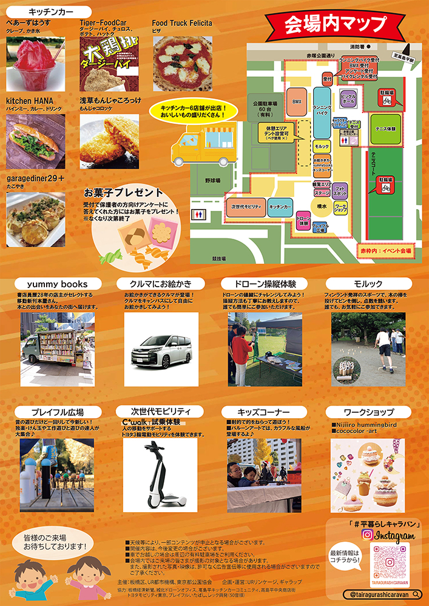
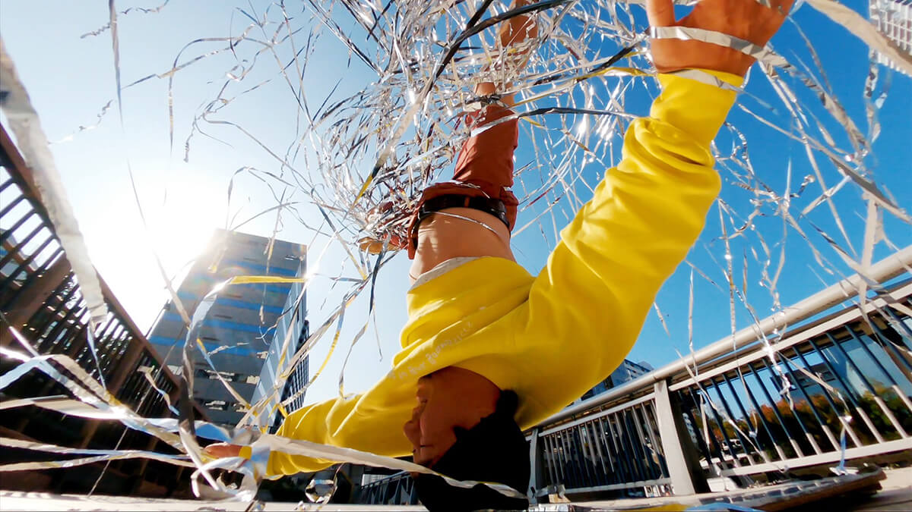

|
第7回 #平暮らしキャラバン すまいるキッズPARK★赤塚公園 |
|
| 開催日 | 2025年6月14日(土)
※雨天時は6月21日(土)に順延 ※延期の際は前日15時までに当HPニュース欄にて告知します |
|---|---|
| 開催場所 | 東京都立赤塚公園 （〒175-0082 東京都板橋区高島平3丁目1） https://www.tokyo-park.or.jp/park/format/index005.html |
| 時 間 | 10:00～15:00（14:45最終受付） |
| 参加資格 | 保護者同伴の上で無記名アンケートにご協力いただける方 |
| 主 催 | 板橋区・UR都市機構・東京都公園協会 |
| 企画・運営 | ギャラップ・URリンケージ |
| 駐車場について | なし お車でお越しの場合は周辺の有料駐車場をご利用いただくか、周辺の公共交通機関をご利用いただきますようお願いします。 |
| アクセス | 都営地下鉄三田線「高島平駅」下車 徒歩8分 |
| イベントタイムテーブル |  |
■ランニングバイク フリー走行、スタート練習、模擬レース
pets実施時間：
フリー走行 10:00～11:30、14:30～15:00
スタート練習 13:00～13:30
模擬レース 13:30～14:00
pets受付方法：当日受付
※模擬レースのみ本部テントで整理券配布(13:10～13:20)
pets定員：なし
pets対象年齢：2才〜6才(未就学児)
pets参加費：無 料
pets内容：ランニングバイクで本格的なコースを思いっきり走ろう!
レースに参加したことがないお子様大歓迎!
友達みんなで走るととても楽しいよ!
※走行はヘルメット着用が必須です。
※バイク・ヘルメットの無料レンタルがあります。
（レンタル数には限りがございます。混雑時にはお待ちいただく場合がございます。）

■ランニングバイク初心者教室(初心者限定)
pets実施時間：11:30 ～ 12:00
pets受付方法：当日整理券配布(本部テントで配布)
(10:40～10:50 抽選券配布 11:00抽選結果発表)
pets定員：15名
pets対象年齢：2才〜6才(未就学児)
pets参加費：無 料
pets内容：ランニングバイクに乗ったことがないお子様でも大丈夫!
ランニングバイクの知識豊富な講師が楽しく丁寧に教えてくれます!乗り方の基礎がしっかりと学べる教室です!
※走行はヘルメット着用が必須です。
※バイク・ヘルメットの無料レンタルがあります。
（レンタル数には限りがございます。混雑時にはお待ちいただく場合がございます。）

■ランニングバイクレース攻略講座(上級者向け)
pets実施時間：14:00 ～ 14:30
pets受付方法：当日整理券配布(本部テントで配布)
(13:10～13:20抽選券配布 13:30抽選結果発表)
pets定 員：15名
pets対象年齢：2才〜6才(未就学児)
pets参加費：無 料
pets内 容：高島平カップで使用した障害物などを使用して「スタート」や「コーナリング」などのテクニックをランニングバイクの知識豊富な講師がレクチャーします。
この機会にたくさん教えてもらって上達しちゃおう!
※ストライダーのレンタルあり
※レンタル数には限りがございます。混雑時にはお待ちいただく場合がございます
※ヘルメット着用が必須です

↓クリックで大きくなります

■ダンスコンテンツ講師情報
大野 愛地(おおの あいち)
京都府出身。1分間一度も手を使わず142回転するヘッドスピンの世界記録保持者。
グラミー賞にノミネートされたアメリカのアーティスト“LMFAO”の公式メンバーであり、2016年に米国テレビ芸術科学アカデミー主催の世界各国から大注目を受ける「エミー賞」にて Outstanding Choreography を見事受賞した“Quest Crew”の公式メンバーである。
